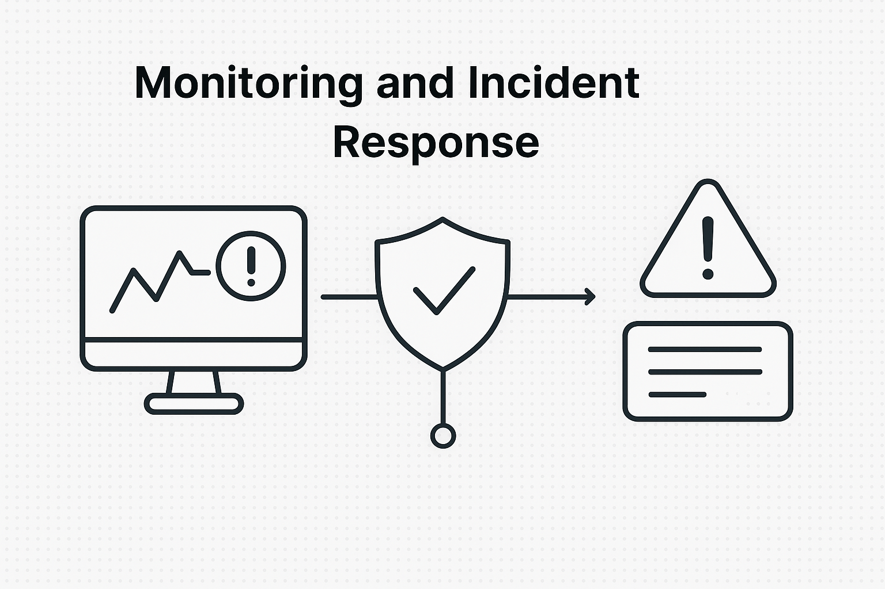

Monitoring & Incident Response

Project Overview
In this project, I built a monitoring and incident response framework to ensure system reliability, fast detection of issues, and automated alerts to reduce downtime. The solution integrates AWS CloudWatch for cloud metrics, ELK Stack (Elasticsearch, Logstash, Kibana) for log aggregation and visualization, and PagerDuty for on-call alerting and incident management.
Architecture
- AWS CloudWatch – collects infrastructure and application metrics.
- ELK Stack – centralizes and visualizes logs for quick troubleshooting.
- PagerDuty – triggers real-time alerts to on-call engineers.
- Incident Playbooks – automated remediation steps for common failures.
Key Features
- Real-time monitoring with CloudWatch dashboards and alarms.
- Centralized log analysis with ELK Stack.
- Automated escalation policies via PagerDuty.
- Incident playbooks to speed up recovery and reduce MTTR.
Outcome
This setup significantly improved system uptime, reduced mean time to detect (MTTD) and mean time to recover (MTTR), and provided stakeholders with real-time observability of the infrastructure.
← Back to Projects